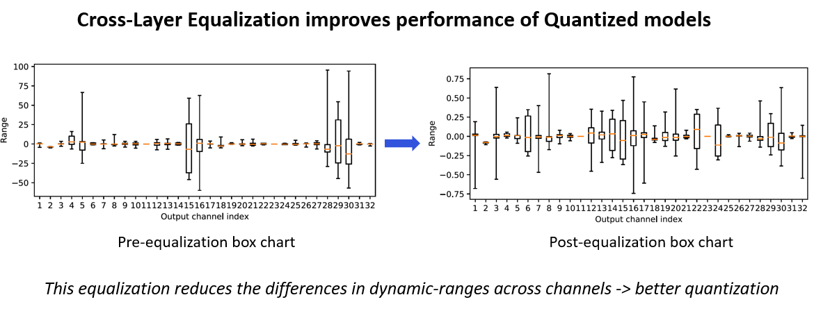

Cross-layer equalization¶
Context¶
Quantization of floating-point models into lower bitwidths introduces quantization noise on the weights and activations, which often reduces model performance. To minimize quantization noise, AIMET recommends a quantization workflow that includes a variety of post training quantization (PTQ) techniques. You can learn more about these techniques here.
AIMET includes cross-layer equalization (CLE) that applies the following PTQ techniques sequentially:
- Step 1: Batch Norm Folding
This feature folds batch norm layers into adjacent Convolutional and Linear layers. For more on BNF see Batch norm folding.
- Step 2: Cross Layer Scaling
Cross-Layer Scaling is a method that rescales weights between consecutive layers (often convolutional or linear layers) to reduce the range imbalance across them. The idea is to balance the dynamic ranges of adjacent layers to make them more quantization-friendly, reducing quantization error.
Suppose you have two consecutive convolution layers:
Conv1 -> ReLU -> Conv2
Conv1 might produce outputs with a wide dynamic range (e.g., from -100 to +100).
Conv2 may have smaller weight values (e.g., between -1 and 1).
When quantizing, the large range forces the use of a coarse quantization grid, reducing accuracy.
Cross-layer scaling rescales Conv1’s weights and Conv2’s weights, so the overall computation remains the same, but the dynamic range is reduced.
Mathematically:
Let:
\(W_1\): weights of Conv1
\(W_2\): weights of Conv2
\(\alpha\): a scaling factor
Then:
Scale \(W_1 \leftarrow \alpha W_1\)
Scale \(W_2 \leftarrow \frac{1}{\alpha} W_2\)
This keeps the output unchanged but balances activation and weight ranges.

- Step 3: High Bias Fold
Cross layer scaling may result in high bias parameter values for some layers. To address this, High Bias fold, folds a portion of a layer’s bias into the parameters of the following layer. Note: This feature requires batch norm parameters to operate on and is not applied otherwise.
Workflow¶
Setup¶
Load the model.
import torch
from torchvision.models import mobilenet_v2
# General setup that can be changed as needed
device = "cuda:0" if torch.cuda.is_available() else "cpu"
model = mobilenet_v2(pretrained=True).eval().to(device)
print(model)
input_shape = (1, 3, 224, 224)
print('*** Before cross-layer equalization ***')
print('\nmodel.features[1].conv[0][0]')
print(model.features[1].conv[0][0])
print('\nmodel.features[1].conv[1]')
print(model.features[1].conv[1])
print('\nmodel.features[1].conv[0][0]')
print(model.features[1].conv[0][0].weight)
print('\nmodel.features[1].conv[1]')
print(model.features[1].conv[1].weight)
MobileNetV2(
(features): Sequential(
(0): Conv2dNormActivation(
(0): Conv2d(3, 32, kernel_size=(3, 3), stride=(2, 2), padding=(1, 1), bias=False)
(1): BatchNorm2d(32, eps=1e-05, momentum=0.1, affine=True, track_running_stats=True)
(2): ReLU6(inplace=True)
)
...
)
*** Before cross-layer equalization ***
model.features[1].conv[0][0]
Conv2d(32, 32, kernel_size=(3, 3), stride=(1, 1), padding=(1, 1), groups=32, bias=False)
model.features[1].conv[1]
Conv2d(32, 16, kernel_size=(1, 1), stride=(1, 1), bias=False)
Prev Conv weight
Parameter containing:
tensor([[[[-9.0973e-03, -1.0901e-02, -8.8945e-03],
[-1.8347e-02, 3.7978e-03, 1.0271e-01],
[-1.0244e-02, -8.3938e-03, 7.5176e-03]]],
...
[[[ 1.0375e-01, -4.2998e-02, -7.6463e-02],
[ 5.1377e-01, -3.6169e-02, -4.6208e-01],
[ 1.0022e-01, -2.9585e-02, -6.4686e-02]]]], device='cuda:0',
requires_grad=True)
Next Conv weight
Parameter containing:
tensor([[[[-9.7119e-03]],
[[ 6.2298e-02]],
...
[[-3.6618e-01]],
[[ 1.0680e-01]]]], device='cuda:0', requires_grad=True)
We recommend simplifying the ONNX model before applying AIMET functionalities. After simplification, the model contains consecutive convolutions, which can be optimized through cross-layer equalization.
import os
import onnx
import onnxsim
import torch
from aimet_onnx.cross_layer_equalization import equalize_model
from torchvision.models import MobileNet_V2_Weights, mobilenet_v2
pt_model = mobilenet_v2(weights=MobileNet_V2_Weights.DEFAULT)
print(pt_model)
# Shape for each ImageNet sample is (3 channels) x (224 height) x (224 width)
input_shape = (1, 3, 224, 224)
dummy_input = torch.randn(input_shape)
# Modify file_path as you wish, we are using temporary directory for now
file_path = os.path.join('/tmp', f'mobilenet_v2.onnx')
torch.onnx.export(
pt_model,
(dummy_input,),
file_path,
dynamo=False,
)
# Load exported ONNX model
model = onnx.load_model(file_path)
# Simplifying the model
try:
model, _ = onnxsim.simplify(model)
except:
print('ONNX Simplifier failed. Proceeding with unsimplified model')
initializers = {init.name: init for init in model.graph.initializer}
prev_conv_weight = onnx.numpy_helper.to_array(
initializers[model.graph.node[4].input[1]]
)
next_conv_weight = onnx.numpy_helper.to_array(
initializers[model.graph.node[5].input[1]]
)
print("*** Before cross-layer equalization ***")
print("\nmodel.graph.node[4]:")
print(model.graph.node[4].name)
print("\nmodel.graph.node[5]:")
print(model.graph.node[5].name)
print("\nPrev Conv weight")
print(prev_conv_weight)
print("\nNext Conv weight")
print(next_conv_weight)
MobileNetV2(
(features): Sequential(
(0): Conv2dNormActivation(
(0): Conv2d(3, 32, kernel_size=(3, 3), stride=(2, 2), padding=(1, 1), bias=False)
(1): BatchNorm2d(32, eps=1e-05, momentum=0.1, affine=True, track_running_stats=True)
(2): ReLU6(inplace=True)
)
...
)
*** Before cross-layer equalization ***
model.graph.node[4]:
/features/features.1/conv/conv.1/Conv
model.graph.node[5]:
/features/features.2/conv/conv.0/conv.0.0/Conv
Prev Conv weight
[[[[ 1.83640555e-01]]
[[ 6.34215236e-01]]
[[ 8.44993666e-02]]
...
[[-6.70130579e-17]]
[[-1.37757687e-02]]
[[ 9.16839484e-03]]]]
Next Conv weight
[[[[-8.41059163e-02]]
[[-1.12039044e-01]]
[[-2.72468403e-02]]
...
[[ 9.46642041e-01]]
[[ 4.35139937e-03]]
[[ 2.57021021e-02]]]]
Execution¶
Apply cross-layer equalization.
from aimet_torch.cross_layer_equalization import equalize_model
# Performs BatchNorm folding, cross layer scaling and high bias folding
equalize_model(model, input_shape)
print('*** After cross-layer equalization ***')
print('\nmodel.features[1].conv[0][0]')
print(model.features[1].conv[0][0].weight)
print('\nmodel.features[1].conv[1]')
print(model.features[1].conv[1].weight)
Prev Conv weight
Parameter containing:
tensor([[[[-7.4094e-02, -8.8789e-02, -7.2443e-02],
[-1.4943e-01, 3.0932e-02, 8.3657e-01],
[-8.3434e-02, -6.8365e-02, 6.1228e-02]]],
...
[[[ 8.3435e-01, -3.4578e-01, -6.1489e-01],
[ 4.1316e+00, -2.9086e-01, -3.7159e+00],
[ 8.0597e-01, -2.3792e-01, -5.2018e-01]]]], device='cuda:0',
requires_grad=True)
Next Conv weight
Parameter containing:
tensor([[[[-7.1706e-03]],
[[ 4.5996e-02]],
...
[[-3.2050e-01]],
[[ 9.3479e-02]]]], device='cuda:0', requires_grad=True)
# Cross-layer equalization is working as in-place manner
equalize_model(model=model)
prev_conv_weight = onnx.numpy_helper.to_array(
initializers[model.graph.node[4].input[1]]
)
next_conv_weight = onnx.numpy_helper.to_array(
initializers[model.graph.node[5].input[1]]
)
print("*** After cross-layer equalization ***")
print("\nPrev Conv weight")
print(prev_conv_weight)
print("\nNext Conv weight")
print(next_conv_weight)
*** After cross-layer equalization ***
Prev Conv weight
[[[[ 6.28238320e-02]]
[[ 2.16966406e-01]]
[[ 2.89074164e-02]]
...
[[-2.44632760e-17]]
[[-5.02887694e-03]]
[[ 3.34694423e-03]]]]
Next Conv weight
[[[[-2.4585028e-01]]
[[-3.5856506e-01]]
[[-3.3467390e-02]]
...
[[ 1.2930528e+00]]
[[ 1.6213797e-02]]
[[ 7.0406616e-02]]]]
API¶
- aimet_torch.cross_layer_equalization.equalize_model(model, input_shapes=None, dummy_input=None)[source]
High-level API to perform Cross-Layer Equalization (CLE) on the given model. The model is equalized in place.
- Parameters:
model (
Module) – Model to equalizeinput_shapes (
Union[Tuple,List[Tuple]]) – Shape of the input (can be a tuple or a list of tuples if multiple inputs)dummy_input (
Union[Tensor,Tuple]) – A dummy input to the model. Can be a Tensor or a Tuple of Tensors. dummy_input will be placed on CPU if not already.
- aimet_onnx.cross_layer_equalization.equalize_model(model)[source]
High-level API to perform Cross-Layer Equalization (CLE) on the given model. The model is equalized in place.
- Parameters:
model (
ModelProto) – Model to equalize